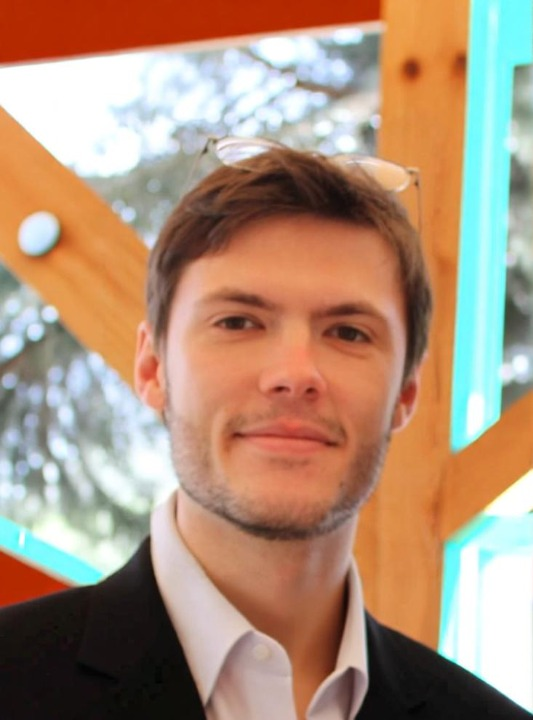
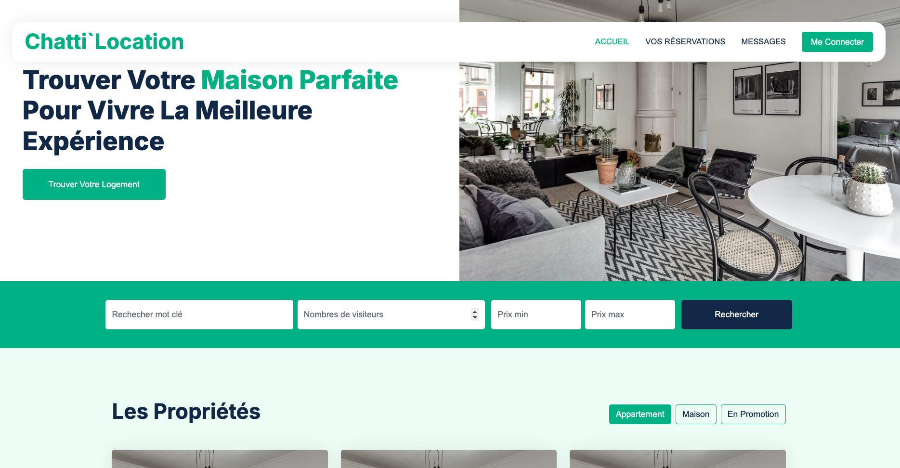
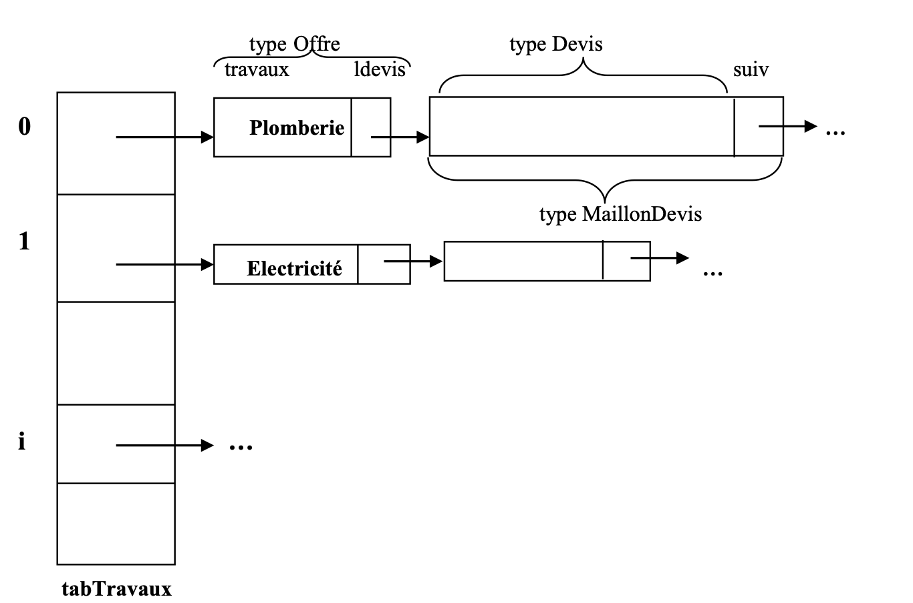
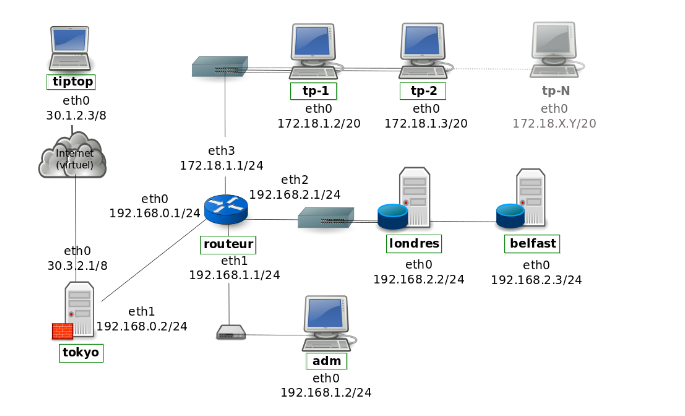
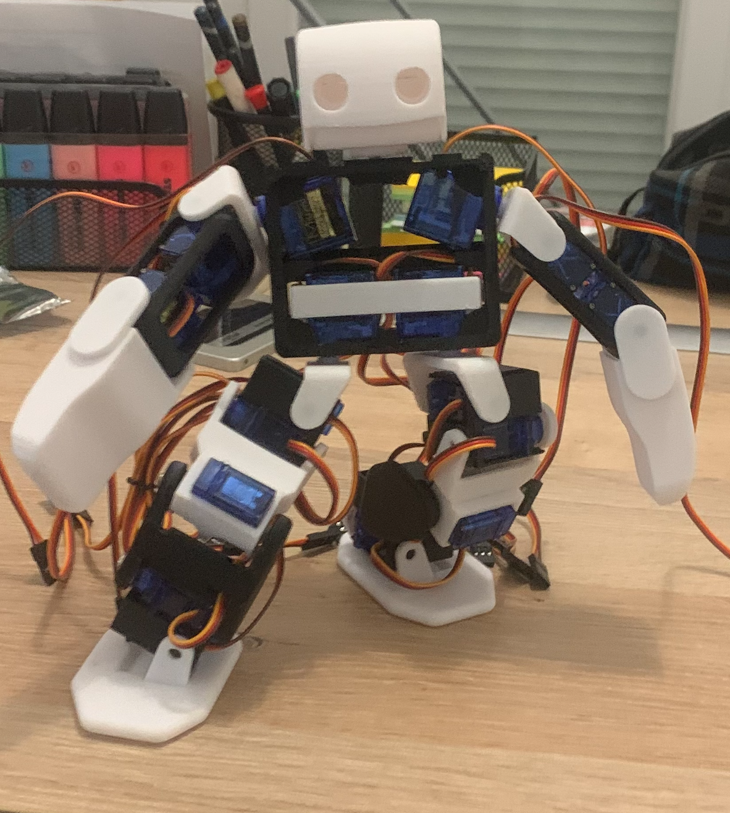

Je suis un grand passionné d'informatique et de technologies en tous genres depuis mes 9 ans. J'ai pratiqué énormément de sports toute ma vie tels que le basket ou le biathlon à haut niveau. Je suis quelqu'un de très manuel et j'aime réaliser des projets personnels de hautes technologies.
Juste après mon bac obtenu en 2019, je suis parti en médecine et j'ai passé le concours PACES (première année commune aux études de la santé) deux années de suite à Clermont-Ferrand. J'ai fait partie de la dernière promotion à pouvoir le présenter. J'ai fait par la suite une première année de dentaire après le concours, mais cela ne m'a pas plu. J'ai donc choisi de me réorienter dans un domaine que j'ai toujours aimé : l'informatique, l'électronique et la robotique.
Lors de ma réorientation, j'ai passé une année en tant que boulanger/vendeur en boulangerie (en CDD au début puis en CDI) où mes responsabilités ont augmenté tout au long de cette expérience. Je suis à présent en deuxième année de BUT Informatique.
Thibaut Hiriart
Clermont-Ferrand, France
thibaut.hiriart@etu.uca.fr
Projets réalisés dans le cadre de ma formation en BUT Informatique.

Site web + application Android pour gérer des biens en location courte durée. API centralisée, synchronisation des calendriers, dashboard administrateur.
Voir le projet
Application en langage C pour gérer la construction et rénovation dans le domaine du bâtiment. Structures de données avancées et contraintes techniques.
Voir le projet
Administration d'un réseau fictif sur VDN avec de nouvelles tâches chaque semaine. Mise en place de mon propre réseau personnel par la suite.
Voir le projetProjets réalisés sur mon temps libre, par passion.

Robot contrôlé par carte Arduino, basé sur le projet open source Plen2. Modification complète des fichiers 3D pour composants européens et programmation intégrale en C++.
Voir le projetBac S
Concours PACES passé deux années de suite à Clermont-Ferrand. Dernière promotion à pouvoir le présenter. Rigueur, capacité d'analyse et gestion du stress acquises.
Après le concours PACES, une année en dentaire. Cela ne m'a finalement pas plu, ce qui m'a poussé à me réorienter vers l'informatique.
Formation du personnel, gestion de stock et livraisons, contact avec la clientèle. Responsabilités croissantes tout au long de cette expérience.
Formation complète en informatique couvrant la programmation, les bases de données, les réseaux et le développement web. Actuellement en 2ème année.
Ouverture et fermeture du magasin, gestion du salé et du pain.
Voici mes principales compétences techniques acquises durant ma formation et mes projets personnels.
N'hésitez pas à me contacter pour discuter de projets ou d'opportunités.
Pour me contacter directement, n'hésitez pas à m'envoyer un email. Je suis toujours ouvert aux nouvelles opportunités et collaborations.